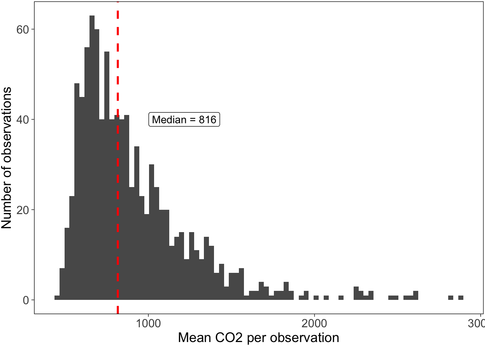
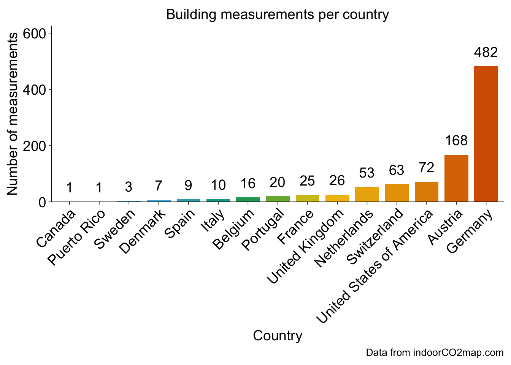
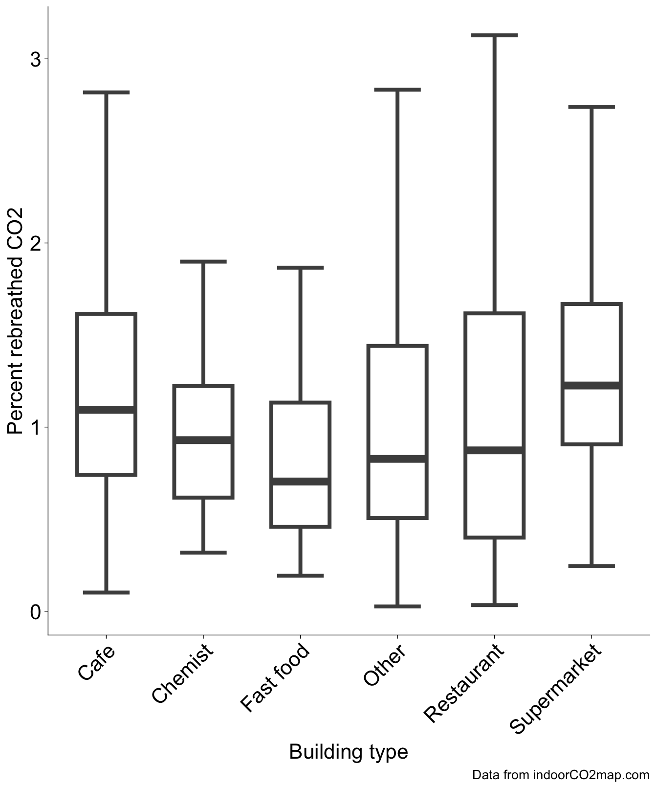
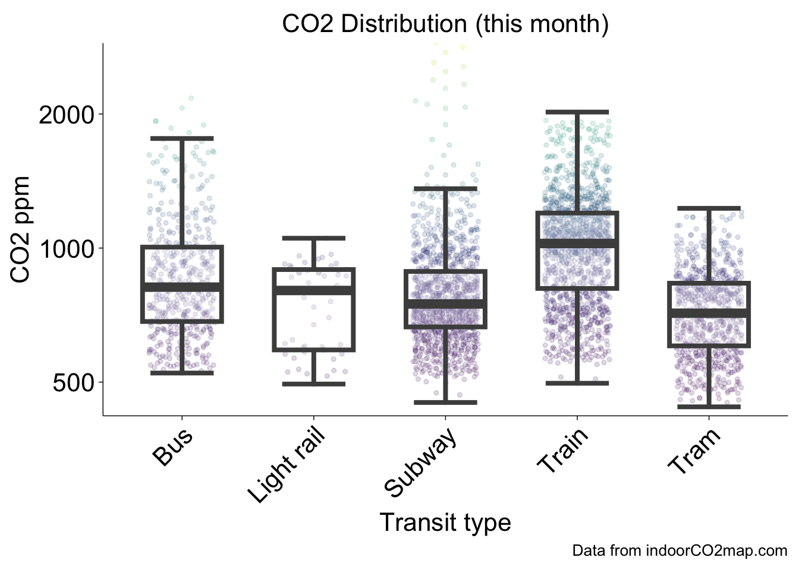
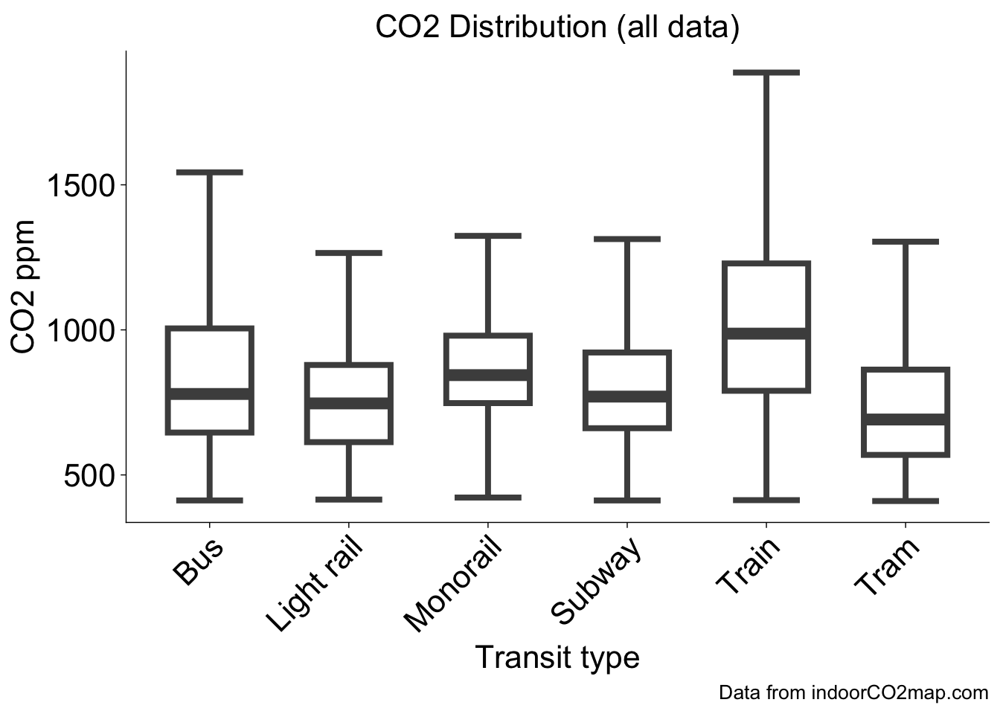

Monthly indoorCO2map.com summary November 2025
There is a well documented relationship between indoor levels of CO2 and the amount of ventilation in indoor environments. Buildings with high indoor levels of CO2 have poor ventilation and are therefore more likely to be vectors of airborne diseases (like COVID-19, Measles, and Flu) and to trap indoor pollutants.
Measuring CO2 inside is a really cheap way of measuring the air quality in indoor environments. When we breathe, we exhale CO2 and it gets trapped inside the room we are in. If the building has good ventilation it will leave quickly. If it has bad ventilation, it stays in the room and builds up.
If there is bad ventilation, then smoke from cooking can build up and that’s bad for you. Same thing for VOCs from perfumes, as well as gas leaks, radon, and mold spores. At high concentrations in artificial environments, they contribute to all sorts of things: cancer, Alzheimer’s, Parkinson’s, childhood asthma, childhood lung problems, and heart conditions. Bad ventilation also contributes to a much higher risk of respiratory infections. If someone who is sick breathes in a badly ventilated room, the infectious aerosols will float around in the room until someone breathes them in. In a well ventilated space, they are dispersed very quickly and the risk of infection is much lower. Having an open window in a classroom (or having an air filter), for instance, reduces school absences significantly.
CO2 levels outside are typically around 420 parts per million (ppm), so if we measure the CO2 in a room and it is higher than that, you know its not ventilating much. Anywhere from 400 - 600 ppm are considered well ventilated. Every indoor environment is going to trap some CO2 and that’s okay. Levels between 600 ppm and 1000 ppm may need some improvement. Anything above 1000 ppm is generally considered bad and should certainly be improved in some manner.
Indoor CO2-Map is a community science project to monitor indoor CO2 levels in non-residential buildings and transit systems around the world. Since April 2024 volunteers have brought CO2 monitors into cafes, shops, schools, trains, and all sorts of other places to monitor CO2 levels in them and upload them to a public database.
The following is a monthly summary of how this project is going.
Buildings
This month there were 966 measurements of 739 unique buildings.
The most measured buildings were Bundesministerium für Klimaschutz, Umwelt, Energie, Mobilität, Innovation und Technologie, a government building in Wien, Österreich (min: 590, mean: 758, max: 986) and Rewe, a supermarket in Kassel, Deutschland (min: 640, mean: 803, max: 950), which were measured 8 times each.
There were measurements in 15 separate countries. Additionally, the first measurement was added in Puerto Rico this month. Welcome to the glorious world of CO2 monitoring Puerto Rico!
Here is a graph that shows the distribution of all the CO2 measurements this month. The dashed red line shows the median which was 816 ppm. There are many measurements in the range that we would consider good CO2 levels, however, you’ll notice that there are also a good number of measurements that are over 1000 ppm, which really should be addressed.
This graph shows the distribution of the most common building types in the month of November. The dark bar in the middle of each box and whisker plot shows the median value for each category. The rest of the lines show the range of the distribution. Most of the values fall within each box. If you want more information about how to interpret this graph, watch this video.
As is common, supermarkets tend to have higher CO2 values than other types of buildings. I’ve converted those CO2 values to the percentage of rebreathed air, which specifies how much of each breath you take has already been exhaled by someone else.
Here is a graph of all the recordings that happened this month shown by the grey curves. I’ve highlighted the highest one.
The building with the highest measured CO2 levels was 100 Club in City of Westminster, United Kingdom with a median CO2 value of 7563 ppm. While this is incredibly high, it is important to realize that this is an outlier. The majority of measurements are much lower than this. There is a boxplot to the right of the graph which shows where the majority of measurements fall.
The building with the lowest measured CO2 levels was Gärtnerei Aeschlimann in Kreis Herzogtum Lauenburg, Deutschland with a median CO2 value of 477 ppm. There were some measurements that were even lower than this, but we have removed them from this analysis. Generally outdoor CO2 levels don’t go below 410 ppm, therefore we have removed any datapoints that are below 400 ppm. If your CO2 monitor consistently shows levels below 410 ppm while you are inside or outside, it is likely that your monitor needs recalibrating.



Here is a chart showing the 11 measurements that had a median CO2 value under 500. Keep in mind that some of these are potentially miscalibrated sensors or erroneous recordings where the sensor was outside. However, it is important to celebrate the places that do in fact have well ventilated spaces.
| Measurements under 500 ppm | |||
|---|---|---|---|
| Name | CO2 ppm | Building type | Location |
| La PAM | 497.0 | Mall | Brest, France |
| Jacafé - Coffee, Craft Beer & Yummy Snacks | 483.0 | Cafe | Funchal, Portugal |
| Neue Apotheke mit Neuem Sanitätshaus St. Josef | 499.0 | Pharmacy | Regensburg, Deutschland |
| Mühlviertler Landbäckerei | 484.0 | Bakery | Bezirk Rohrbach, Österreich |
| Rise & Dine | 499.0 | Cafe | Funchal, Portugal |
| Gärtnerei Aeschlimann | 477.0 | Garden centre | Kreis Herzogtum Lauenburg, Deutschland |
| Loft Brunch & Cocktails [na.praça] | 488.0 | Restaurant | Funchal, Portugal |
| Between Cafe & Healthy Food | 479.0 | Cafe | Funchal, Portugal |
| Stadt- und Landesbibliothek | 484.5 | Library | Dortmund, Deutschland |
| Stadtbibliothek Erlangen | 487.0 | Library | Erlangen, Deutschland |
| ETH Hauptgebäude (HG) | 490.0 | Zürich, Switzerland | |
Trends over time
The following are charts that are updated every month, but they reflect all data collected so far from the indoorco2 monitoring project (since April 2024). Over time, we should be able to see yearly trends where CO2 levels are higher in the Winter when shopkeepers close their windows to keep things warm and then lower CO2 levels when shopkeepers open their windows in the Summer.
Transit
This month there were 183 measurements of 122 unique transit lines. The most measured transit line was subway U6 in the U-Bahn Wien transit network in Wien, Österreich (min: 486, mean: 845, max: 1663), which was measured 14 times. This graph shows the number of transit recordings in each transit network during the last month. Keep in mind that this graph only shows networks with more than 2 transit recordings this month (there were quite a few with one or two). Transit recordings seem very popular in Vienna at the moment.
When we look at the distribution of CO2 measurements by the transit type this month we can see some patterns. Trains often have higher CO2 values than buses, subways and trams because they usually travel for longer distances between stations. This causes trains to rely more heavily on mechanical ventilation than buses, subways, and trams which open their doors at stations more frequently.
This trend can also be seen when we look at the distribution of each transit type on all the data from 2024 and 2025.



That’s all for this month! Check back soon for more updates.
Some thanks
This work would not be possible without the hard work of all the contributors to OpenStreetMap and indoorco2map. If you would like to contribute to either of these projects, please visit their websites. You can contribute to the indoorco2map by downloading the Android app or iOS app and connecting it to any one of the following CO2 sensors: Aranet4, Airvalent, AirSpot and Inkbird IAM-T1. I would also like to thank Aurel Wünsch who tirelessly works on the project as well as the other contributors to the project ahunt, da5nsy, paul-hammant, and samherniman.
Finally, many thanks go to the teams who work on the following software, which I used heavily.
We used R v. 4.4.3 (R Core Team 2025) and the following R packages: autocruller v. 0.0.0.9000 (Herniman 2025), dbscan v. 1.2.3 (Hahsler, Piekenbrock, and Doran 2019; Hahsler and Piekenbrock 2025), glue v. 1.8.0 (Hester and Bryan 2024), gt v. 1.0.0 (Iannone et al. 2025), h3 v. 3.7.2 (Kuethe 2022), here v. 1.0.1 (Müller 2020), mapview v. 2.11.2 (Appelhans et al. 2023), osmdata v. 0.2.5 (Mark Padgham et al. 2017), patchwork v. 1.3.1 (Pedersen 2025), rmarkdown v. 2.30 (Xie, Allaire, and Grolemund 2018; Xie, Dervieux, and Riederer 2020; Allaire et al. 2025), scales v. 1.4.0 (Wickham, Pedersen, and Seidel 2025), scico v. 1.5.0 (Pedersen and Crameri 2023), sf v. 1.0.22 (Pebesma 2018; Pebesma and Bivand 2023), tidygeocoder v. 1.0.6 (Cambon et al. 2021), tidyplots v. 0.2.2.9000 (Engler 2025), tidyverse v. 2.0.0 (Wickham et al. 2019).
References
Allaire, JJ, Yihui Xie, Christophe Dervieux, Jonathan McPherson, Javier Luraschi, Kevin Ushey, Aron Atkins, et al. 2025. rmarkdown: Dynamic Documents for r. https://github.com/rstudio/rmarkdown.
Appelhans, Tim, Florian Detsch, Christoph Reudenbach, and Stefan Woellauer. 2023. mapview: Interactive Viewing of Spatial Data in r. https://CRAN.R-project.org/package=mapview.
Cambon, Jesse, Diego Hernangómez, Christopher Belanger, and Daniel Possenriede. 2021. “tidygeocoder: An r Package for Geocoding.” Journal of Open Source Software 6 (65): 3544. https://doi.org/10.21105/joss.03544.
Engler, Jan Broder. 2025. “Tidyplots Empowers Life Scientists with Easy Code-Based Data Visualization.” iMeta, e70018. https://doi.org/https://doi.org/10.1002/imt2.70018.
Hahsler, Michael, and Matthew Piekenbrock. 2025. dbscan: Density-Based Spatial Clustering of Applications with Noise (DBSCAN) and Related Algorithms. https://CRAN.R-project.org/package=dbscan.
Hahsler, Michael, Matthew Piekenbrock, and Derek Doran. 2019. “dbscan: Fast Density-Based Clustering with R.” Journal of Statistical Software 91 (1): 1–30. https://doi.org/10.18637/jss.v091.i01.
Herniman, Sam. 2025. autocruller: Tools to Download and Analyze indoorCO2map Data. https://github.com/samherniman/autocruller.
Hester, Jim, and Jennifer Bryan. 2024. glue: Interpreted String Literals. https://CRAN.R-project.org/package=glue.
Iannone, Richard, Joe Cheng, Barret Schloerke, Ellis Hughes, Alexandra Lauer, JooYoung Seo, Ken Brevoort, and Olivier Roy. 2025. gt: Easily Create Presentation-Ready Display Tables. https://CRAN.R-project.org/package=gt.
Kuethe, Stefan. 2022. H3: R Bindings for H3. https://github.com/crazycapivara/h3-r.
Mark Padgham, Bob Rudis, Robin Lovelace, and Maëlle Salmon. 2017. “Osmdata.” Journal of Open Source Software 2 (14): 305. https://doi.org/10.21105/joss.00305.
Müller, Kirill. 2020. here: A Simpler Way to Find Your Files. https://CRAN.R-project.org/package=here.
Pebesma, Edzer. 2018. “Simple Features for R: Standardized Support for Spatial Vector Data.” The R Journal 10 (1): 439–46. https://doi.org/10.32614/RJ-2018-009.
Pebesma, Edzer, and Roger Bivand. 2023. Spatial Data Science: With applications in R. Chapman and Hall/CRC. https://doi.org/10.1201/9780429459016.
Pedersen, Thomas Lin. 2025. patchwork: The Composer of Plots. https://CRAN.R-project.org/package=patchwork.
Pedersen, Thomas Lin, and Fabio Crameri. 2023. scico: Colour Palettes Based on the Scientific Colour-Maps. https://CRAN.R-project.org/package=scico.
R Core Team. 2025. R: A Language and Environment for Statistical Computing. Vienna, Austria: R Foundation for Statistical Computing. https://www.R-project.org/.
Wickham, Hadley, Mara Averick, Jennifer Bryan, Winston Chang, Lucy D’Agostino McGowan, Romain François, Garrett Grolemund, et al. 2019. “Welcome to the tidyverse.” Journal of Open Source Software 4 (43): 1686. https://doi.org/10.21105/joss.01686.
Wickham, Hadley, Thomas Lin Pedersen, and Dana Seidel. 2025. scales: Scale Functions for Visualization. https://CRAN.R-project.org/package=scales.
Xie, Yihui, J. J. Allaire, and Garrett Grolemund. 2018. R Markdown: The Definitive Guide. Boca Raton, Florida: Chapman; Hall/CRC. https://bookdown.org/yihui/rmarkdown.
Xie, Yihui, Christophe Dervieux, and Emily Riederer. 2020. R Markdown Cookbook. Boca Raton, Florida: Chapman; Hall/CRC. https://bookdown.org/yihui/rmarkdown-cookbook.